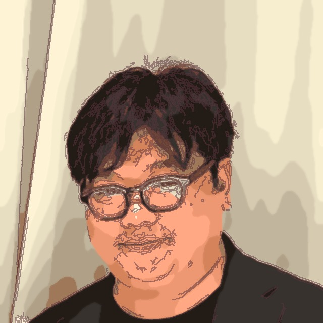
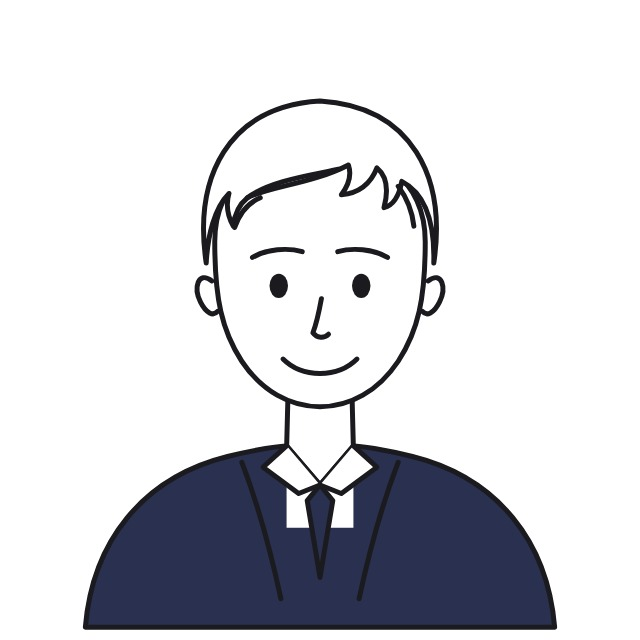

会計士や税理士になるための場ではなく、保険営業マンが社長から経営相談されるための実践の場です。
決算書を読む→分析する→知って終わる
ゴール＝「理解できた」
決算書を預かる→面談化する→提案・紹介へ
ゴール＝「社長から相談された」
決算書が読めても、会話は変わらない。
変わるのは、決算書を「預かれた」とき。
足りないのは知識ではなく、「現場の型」です。
5つの壁はすべて、知識ではなく「実装」の壁。
だから、勉強だけでは越えられない。
社長が本当に求めているのは、保険ではありません。
“お金の悩み”を一緒に考えてくれる相手です。
経営課題を数字で整理した“その先”に、はじめて保険の必要性が生まれる。
税理士は“正しく守る”専門家。財務参謀は“未来のお金”の伴走者。
| 税理士 | 財務参謀（あなた） | |
|---|---|---|
| 視点 | 過去の記録 | 未来の資金 |
| 役割 | 正しく守る | 一緒に考える |
| 問い | 税金をいくら払うか | お金をいくら残すか |
競合ではなく、分担。役割を分けて、二人で社長を支える。
「読む力」で、終わらせない。
講義は、6分の1にすぎません。
STEP 01
財務テーマを理解する
STEP 02
会計用語を現場の言葉に変える
STEP 03
社長に何と言うかを練習する
STEP 04
実際の決算書・事例で考える
STEP 05
次回提案・紹介への流れを組む
STEP 06
現場で試した結果を共有・改善
座学2割・実践8割。「翌日の面談で使える状態」で持ち帰る。
社長に、何と言って決算書を預かるか。
「社長、保険の見直しだけでなく、会社にお金が残る構造になっているかを一緒に確認したいんです。売上・粗利・固定費の流れを見ると、なぜお金が残らないのかが見えてきます。まずは直近2期分の決算書だけで大丈夫ですので、一度拝見してもよろしいですか？」
このトークを、ロープレで「自分の言葉」になるまで練習します。
保険の「お願い営業」が、終わる。
④単価・⑤紹介は目的ではなく、①〜③の結果。
順番を守るから、売り込みが消える。
「学ぶ場所」ではなく、「実装する道場」。
| 一般的な決算書講座・FP塾 | 財務道場 | |
|---|---|---|
| ゴール | 決算書を理解する | 社長から経営相談される |
| 学ぶもの | 会計知識・財務分析 | トーク・診断・面談設計 |
| 決算書 | 教材として読む | 社長から預かる練習をする |
| 形式 | 講義中心 | ケース診断・ロープレ・実践報告 |
| 成果物 | 知識・修了 | 面談の型・診断シート・紹介動線 |
各回、「学ぶテーマ」と「現場で使える武器」がセットです。
数字の入口をつくり、決算書を預かる
財務参謀と高単価案件
現場の武器経営相談へ切り替えるトークB/S・資産の部
現場の武器不良在庫・役員貸付金に気づく質問B/S負債・銀行格付け
現場の武器銀行が見る信用力を社長語で説明P/L・粗利・営業利益
現場の武器利益構造を見直す面談減価償却
現場の武器利益と現金のズレを説明する税金と資金繰り
現場の武器納税を見越した資金繰り相談支援から、提案・紹介へつなげる
事業計画書
現場の武器追加融資・金融機関対応の入口B/S組み替え
現場の武器返済に追われる会社の初動対応ベンチマーク
現場の武器同業比較で改善余地を見つける黒字倒産の予兆
現場の武器資金ショートのサインを見抜くM&A・事業承継
現場の武器退職金・相続・保険相談へつなぐ財務参謀の対話術
現場の武器紹介される面談設計を完成させる変わったのは知識量ではなく、社長との会話。
決算書が怖く、面談が保険商品の話に寄りがちだった。
「保険料が会社の利益に合っているか確認したい」と伝え、決算書を預かれるようになった。
社長との雑談で、保険の提案タイミングばかり探していた。
売上・粗利・固定費の話から入り、社長から「次は何を見たらいい？」と聞かれるようになった。
「どなたかご紹介ください」が言い出せなかった。
財務の気づきを提供できるようになり、社長の方から別法人を紹介された。
数値実績の誇張はしません。変化はすべて「社長との会話」の事実です。
「手厚いサポート」ではなく、明日の面談に持っていける道具。
型を学び、その場で練習
預かった決算書をそのまま診断
関係性別の「預かる一言」
面談が止まらない質問リスト
社長にそのまま渡せる実物
提案・紹介への設計図
実例で「診る→話す」を鍛える
現場の壁をその場で解決
やりっぱなしにしない仕組み
すべて、「学んで終わり」を防ぎ、現場で使うための装備です。
貢献が先。利益は、後からついてくる。
また、次の会社へ。紹介が循環する。
順番を守るから、売り込みが消え、紹介が続く。これが一番合理的な法人開拓。
まずは、体験から。
STEP 01
講座の流れをそのまま体験
STEP 02
営業スタイルと課題を整理
STEP 03
12回で目指す形を決める
STEP 04
プランを選択
STEP 05
決算書を預かる準備を始める
全員に入会をお勧めすることはありません。
合わないと感じたら、個別相談で遠慮なくお聞かせください。

INSTRUCTOR財務コンサルタント／中小零細企業専門CFO
札幌出身
「社長と同じ立場を経験しているからこその提案」
大学卒業後、約13年間会計事務所で決算、税務申告、資金調達支援等に従事。その後、ソフトウェア会社社長、電子部品会社CFO、飲食・コスト削減コンサル会社代表などを経て、現場で「夜も眠れないお金の苦労」を誰よりも経験。現在は複数企業の現役CFOとして経営を支援。

INSTRUCTOR生命保険・損害保険コンサルタント
法人保険・リスクマネジメント／証券外務員一種保有
「保険を売って終わりにしない。事故の前・時・後、すべての場面で経営者の隣に立つ」
新卒でパナソニック電工に入社し、法人営業を約5年経験。2013年に生命保険業界へ転身し、外資系生命保険会社・独立系FP会社を経て、現在はファイナンシャルアライアンス株式会社に所属。保険業界歴約13年。個人約500世帯・法人約50社の保険相談・契約対応に携わり、営業拠点の立ち上げ・育成・マネジメントも約5年経験。
大丈夫です。財務道場は「財務、苦手でいい」から始まる道場です。会計知識を網羅するのではなく、社長との会話に必要なポイントに絞り、会計用語を「社長語」に翻訳しながら進めるので、基礎知識ゼロからでも実践に入れます。
生命保険・損害保険の営業パーソンを中心に、FP、士業、コンサルタントなど、法人マーケットで社長の相談相手になりたい方が参加しています。個人保険中心から法人開拓へ踏み出したい方も多くいらっしゃいます。
いいえ。座学2割・実践8割です。ミニ講義のあと、決算書入手トークの練習、実際の決算書・事例を使ったケース診断、面談設計、実践報告まで行い、「翌日の面談で使える状態」で持ち帰っていただきます。
まずは体験参加で、講座の流れをそのまま体験してください。その後の個別相談で営業スタイルと課題を整理してから判断いただけます。全員に入会をお勧めすることはありません。合わないと感じたら、遠慮なくお聞かせください。
公式LINEから、「体験参加」「個別相談」をお申し込みください。
各種ご相談もお気軽にどうぞ。